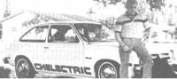

We came, we saw, we tested. . . and we were pretty impressed!
STAFF PHOTO
A while back our alternative vehicle researchers came across (and subsequently recommended that Mother's Bookshelf (restricted) carry) a volume called the Electric Vehicle Components Catalog, put out by Flight Systems, Incorporated. Each successive edition of the catalog has gotten better, too, and the newest (No. 3) version of the 75-page book includes-in addition to an up-to-date listing of available components-an in-depth discussion of the key factors that must be considered when converting any vehicle to electric power (and those factors are just the sort of thing that most of us figure out after a mistake has already been made).
We were sufficiently impressed by the catalog to want to find out more about the folks who are responsible for it. As you'd imagine, Flight Systems got its start in the aviation industry. Back in 1965 the company began producing solid-state controllers (used for light pulsing) for both aircraft and landing fields . . . and that business eventually got the firm involved in the U.S. space program. By the early 1970's, however, the directors began to become enthusiastic about the potential of electric automobiles, and -as of 1980-they made a commitment to do their best to supply some of the needs of what they believed would be a growing market.
So at about the same time that MOTHER was deeply involved in alternative automobile research, the Flight Systems folks were developing a few plans and publications of their own. And those manuals describe the procedures necessary to convert a Chevette, a Pinto, and a VW beetle from internal combustion engine to total (not hybrid) electric power.
The plans are now available, and MOTHER'S crew lost no time in checking them out. Each of the three conversions is meticulously detailed in its own large-format booklet and accompanying construction drawings. Furthermore, in addition to providing clear step-by-step conversion instruction, the plans contain pertinent information on such topics as battery charging and maintenance.
Our interest was really piqued by the time we'd finished going over the plans, and we decided to test the performance of a Flight Systems conversion. To do so, we sent a staffer to visit Ted Combs and Jerry McDonald of Fort Lauderdale, Florida . . . who own a converted Chevette that's used to provide transportation to and from their electric parts business.
We found the vehicle looking as clean and well detailed as the plans book had indicated that it would. The car was set up with a Silicon Controlled Rectifier (SCR) system and a single bank of 6-volt deep-cycle batteries, which provide 72 volts to a 15-HP General Electric traction motor.
The Chevette exhibited good acceleration, even when started in second gear. We did notice that current draws were initially in the 400-amp range, but these dropped off drastically as the car gained momentum. At a steady 25 and 30 MPH, for example, the draws were approximately 150 and 200 amps, respectively. Therefore, if the operator employs moderate driving techniques, the vehicle will deliver a 30- to 40-mile range on a single charge. (During slightly more rigorous testing, we found that the Chevette was quite capable of achieving speeds of up to 60 MPH.)
All in all, then, the Flight Systems car was a very tractable and comfortable machine (a low whine from the SCR, which diminished with increased speed, was the only reminder that the vehicle was powered by electricity), which is worthy of the consideration of anyone who's planning to build a quality electric vehicle. And because we felt that many of you folks would be interested in these excellent plans, we've made arrangements with Flight Systems to offer the packages to MOTHER-readers at the price of $17.50 apiece (postpaid). You can order by sending that sum (be sure to specify Chevette, Pinto, or VW beetle) to Flight Systems Plans, c/o Mother's Plans, P.O. Box A, East Flat Rock, North Carolina 28726 ... or by calling Flight Systems' toll-free number, 800/543-3000 (in Ohio, 800/562-1334).
EDITOR'S NOTE: The Electric Vehicle Components Catalog can now be found in some bookstores and libraries . . . or ordered-for S3.50 plus 95 cents shipping and handling-from Mother's Bookshelf(restricted), P. 0. Box 70, Hendersonville, North Carolina 28791.
|
 |
|
|